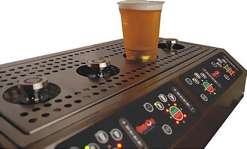

Tue, 25 Jan 2011 06:18:27 · beer · Aussie · Australia · Invention
Bottoms Up Beer Dispenser
This is how we, Aussie, loves Beer so much more than Americans do ;-)
Founded by Josh Springer, a former manager at a company that creates neon signs like those used in Las Vegas, the invention relies on magnetic technology embedded in plastic cups.

Each plastic cup has a hole in the bottom which is wide enough for a nozzle to be inserted. The key to keeping the hole sealed when beer is put in through the bottom is via a circle magnet that when pushed up by the nozzle lifts up so beer can be put in. When the beer is full, the machine automatically cuts off and all a bartender needs to do is just pull the beer off of the nozzle and the magnetic circle is then drawn back down to the cup by a tin magnetic ring embedded in the cup.
It definitely saves time queuing that long line when partying! Read more of this wicked invention here.